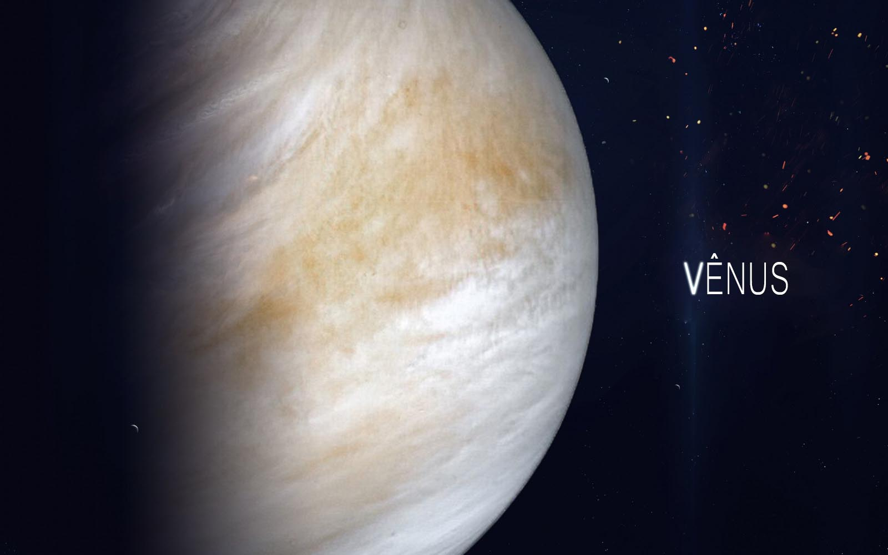

Vênus
Vênus é o segundo planeta do Sistema Solar em ordem de distância a partir do Sol, orbitando-o a cada 224,7 dias. Recebeu seu nome em homenagem à deusa romana do amor e da beleza Vénus, equivalente a Afrodite. Depois da Lua, é o objeto mais brilhante do céu noturno, atingindo uma magnitude aparente de -4,6, o suficiente para produzir sombras. A distância média da Terra a Vênus é de 0,28 AU, sendo esta a menor distância entre qualquer par de planetas. Como Vénus se encontra mais próximo do Sol do que a Terra, ele pode ser visto aproximadamente na mesma direção do Sol (sua maior elongação é de 47,8°). Vénus atinge seu brilho máximo algumas horas antes da alvorada ou depois do ocaso, sendo por isso conhecido como a estrela da manhã (Estrela d'Alva) ou estrela da tarde (Vésper); também é chamado Estrela do Pastor.
| Diâmetro médio | 12 103,6 km |
| Área da superfície | 4,60 ×108 km² |
| Volume | 92,843 ×1010 km³ |
| Massa | 4,8685 ×1024 kg |
| Densidade média | 5,243 g/cm³ |
| Gravidade superficial | 8,87 m/s2 |
| Período de rotação | -243,021 dias |
| Temperatura | média: 461 ºC |
Vénus é considerado um planeta do tipo terrestre ou telúrico, chamado com frequência de planeta irmão da Terra, já que ambos são similares quanto ao tamanho, massa e composição. Vénus é coberto por uma camada opaca de nuvens de ácido sulfúrico altamente reflexivas, impedindo que a sua superfície seja vista do espaço na luz visível. Ele possui a mais densa atmosfera entre todos os planetas terrestres do Sistema Solar, constituída principalmente de dióxido de carbono. Vénus não possui um ciclo do carbono para fixar o carbono em rochas ou outros componentes da superfície, nem parece ter vida orgânica para absorvê-lo como biomassa. Acredita-se que no passado Vénus possuía oceanos como os da Terra, que se evaporaram quando a temperatura se elevou, restando uma paisagem desértica, seca e poeirenta, com muitas pedras em forma de placas. A água provavelmente se dissociou e, devido à inexistência de um campo magnético, o hidrogênio foi arrastado para o espaço interplanetário pelo vento solar. A pressão atmosférica na superfície do planeta é 92 vezes a da Terra.